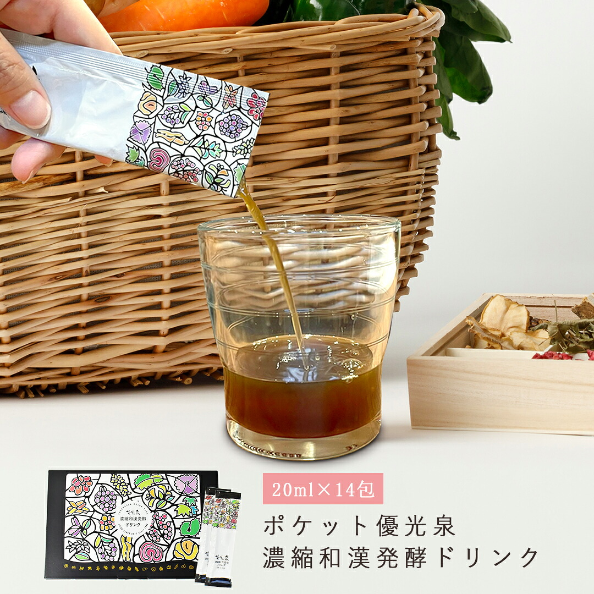

RAKUTEN SUPER SALE
今回のSALE、
順番に
ご案内します。
断食道場SHOPの大塚です。9月3日の福袋から、SALE終盤のクーポンまで。ファスティングをこれから始める方も、続けている方も、上から順に見ていってください。
楽天スーパーSALE 開催期間
9/4 fri 20:00
→
9/11 fri 01:59
※ 店舗クーポン・サブローの日限定福袋は 9/3 から始まります。

SABURO NO HI ─ 毎月 3〜6 日
9/3木→9/6日
4日間だけ
サブローの日、
限定福袋。
店長 北島のあだ名「サブロー」にちなんで、毎月 3〜6 日だけ開く福袋です。中身はすべて公開しているので、届いてからのがっかりがありません。おすそわけ袋つきなので、家族や職場にも分けられます。
サブロー笑顔袋
3,600円（税込）
- ポケット優光泉 20ml × 15包
- ポケット優光泉 20ml × 6包
- くわタブレット 1袋
- おすそわけ袋 2枚
サブロー笑顔 2倍盛り袋
7,200円（税込）
- 優光泉 600ml ボトル 1本
- ポケット優光泉 20ml × 15包
- ポケット優光泉 20ml × 6包
- くわタブレット 1袋
- おすそわけ袋 2枚

福袋に入る「ポケット優光泉」は、128種以上の素材からつくる植物性発酵飲料です。
START DASH ─ 先着 200 名
9/3木→9/5土
SALE前半の3日間
はじめの3日間は、
対象商品が 15%OFF。
SALE前半だけの割引クーポンです。先着 200 名に達し次第終了なので、買うものが決まっている方は、まずクーポンの受け取りから済ませておいてください。
DISCOUNT
15%OFF
LIMIT
200名
対象商品はショップ内の優光泉シリーズが中心です。
AFTER 9/6
9/6日→9/11金
SALE終了 1:59 まで
9月6日からは、
10%OFF。
前半に間に合わなくても大丈夫です。6日以降は対象商品全品が 10%OFF。SALE最終日、9月11日 1:59 まで使えます。はじめての方は、少量のお試しセットから始めるのがおすすめです。
DISCOUNT
10%OFF
まず味を確かめたい方へ。スタンダードと梅の2本セット。
POCKET YUKOSEN ─ SALE 期間中
期間中→9/11金
3枚のクーポンを重ねて使えます
まとめるほど、
1包が軽くなる。
ポケット優光泉 15包シリーズは、下の3枚のクーポンを重ねて使えます。1箱だけでも、3箱そろえても。持ち運びやすいスティックなので、外出が多い日のファスティングにも向いています。
01
1箱目
20%OFF
02
2箱目
45%OFF
03
3箱目
0円 ／ 無料

※ ゼリーは対象外です。対象は「ポケット優光泉 15包シリーズ」。